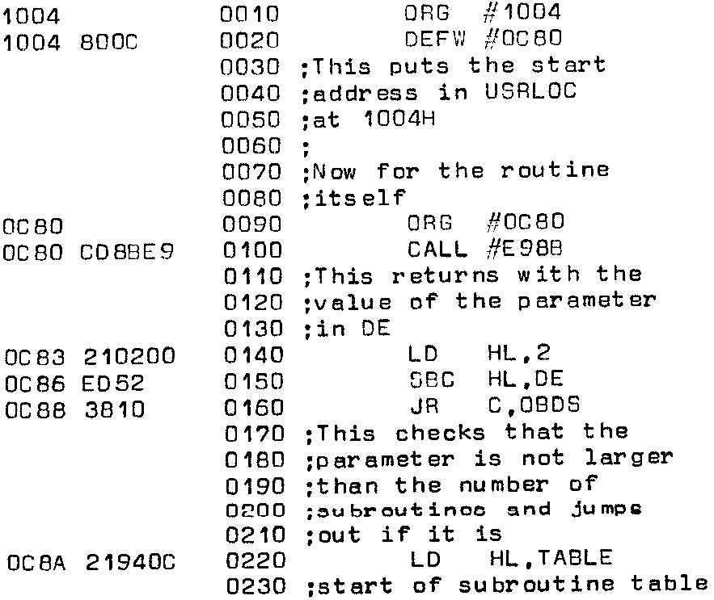

INMC 80 News |
October–December 1981 · Issue 5 |
| Page 56 of 71 |
|---|
The second routine can, in fact, be used for printing both Naspen and BASIC inputs, and can be conveniently loaded from a short piece of paper tape.
Another problem which has caused me some difficulty, is how do you use more than one USR function in a BASIC program? To call a single machine code routine from BASIC is fairly straightforward, and, following the instructions in the manual, all you do is insert the starting address of the routine in USRLOC at 1004H, using the M command, before calling it. But there is only one entry point though which the machine code routines must pass; however, the parameter of the USR function can be accessed from machine code by calling a routine called DEINT whose address is contained in E00B, which turns out to be located at E98BH – this provides the clue as to how to differentiate between the different functions. The answer is to produce a jump table of addresses of the routines to be accessed from BASIC and use the parameter passed through DE to determine which one to jump to.
The ZEAP listing below shows how this can be done. The first few bytes poke the starting address of the jump-table routine into USRLOC; in this example I used 0C80. Then you collect the USR parameter from DE by calling E98BH, and first make sure that it is not greater than the number of subroutines available – if it is, you print an error message and return to BASIC. If the value contained in DE is within range, it is doubled (because the addresses are two bytes long) and added to the address of the start of the table. The contents of that address are then jumped to and away you go. To illustrate the method, the listing shows three trivial subroutines which poke a character onto the screen, and then return a value to the appropriate USR function by placing it in the AB registers. The routine whose address is stored at E00DH (which turns out to be FDF2H) is then called and the number placed in AB is returned as the value of the USR function. Although only three subroutines are shown, you can, of course, use as many as you like.
Incidentally, if you are using ZEAP to develop the USR routines it is worth moving the edit buffer away from 1000H since BASIC will overwrite it, and this can be very frustrating. The buffer can be moved, for example, by calling ZEAP from NASSYS by the command – E D000 3000 2000, which puts the buffer between 2000 and 3000H.
| Page 56 of 71 |
|---|